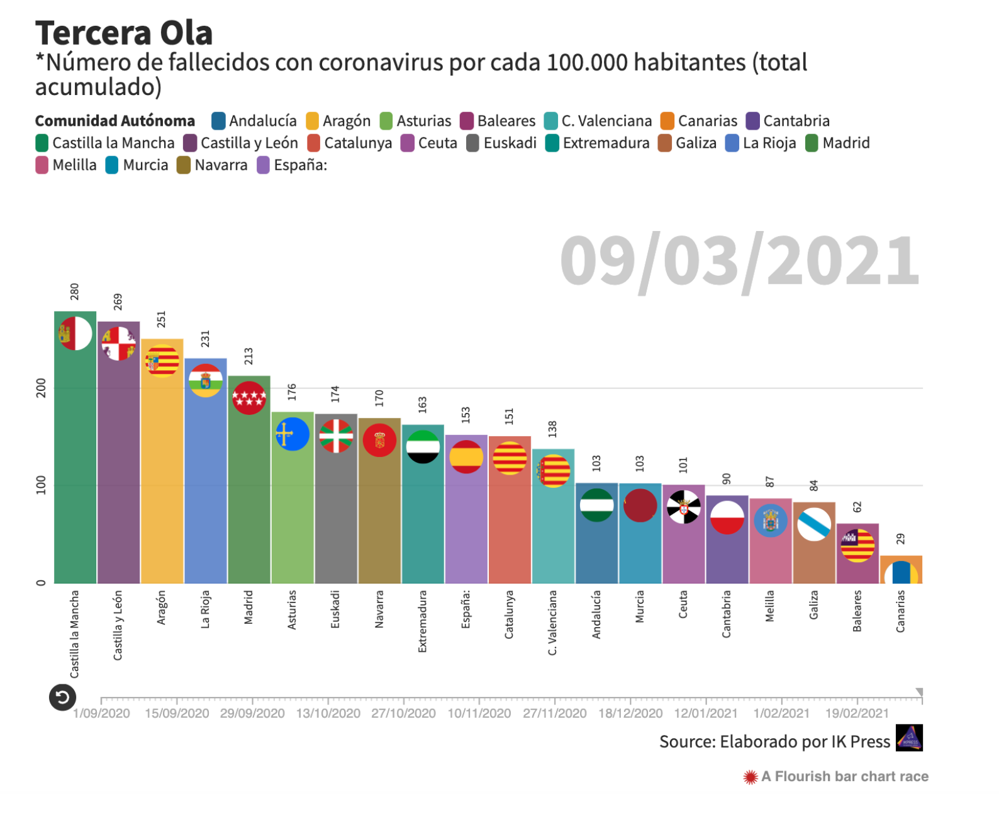
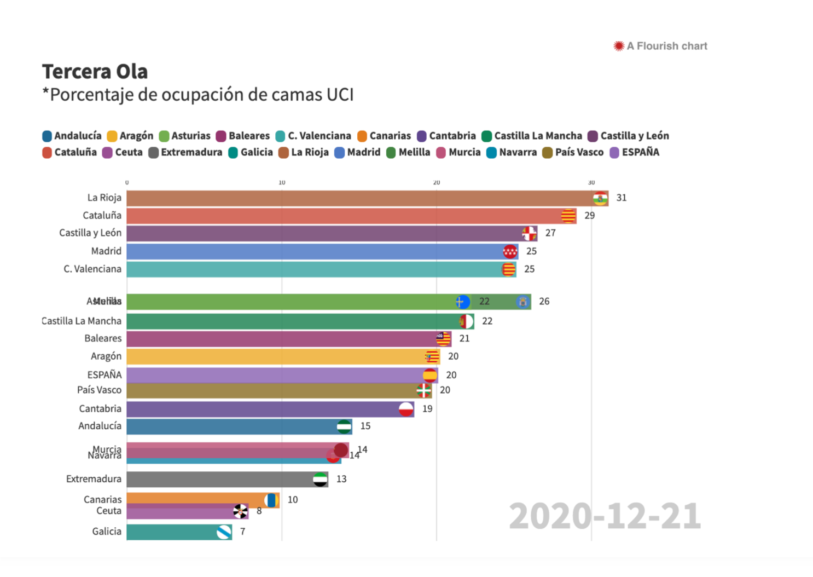
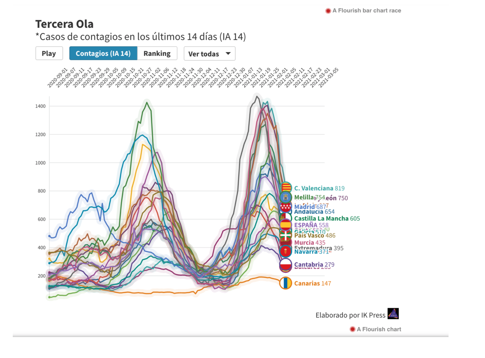

Gráficos de salud: Coronavirus
Los gráficos son interactivos (aunque lo que vemos son capturas y no tienen movimiento). Están muy bien visualizados y propuestos dado que la manera de mostrarlos es clara y muy visual. Por colores, nombres y banderas al lado de cada uno de los nombres de las CCAA. Es decir, que los datos están bien plasmados y los usuarios que se metan a observar la evolución verán de manera muy directa y trasparente y esclarecida la evolución pandémica de tres hechos diferenciados.
Estas gráficas de visualización de datos muestran la evolución epidemiológica de las diferentes Comunidades Autónomas en cuanto a número de fallecidos por cada 100.000 habitantes desde el inicio de la pandemia hasta el día actual en la que lo consultes ( por ejemplo en la gráfica 3: 09-03.2021). Lo mismo en la gráfica 2, que muestra la ocupación de las camas UCI por CCAA desde el inicio hasta ahora y la gráfica 1 que muestra la incidencia acumulada en los últimos 14 días de las CCAA.
#Visualización de datos II
  